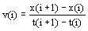

On choisit le format par défaut des nombres : 1.12E+4 ou 11.2k ainsi que le nombre de chiffres significatifs. Un clic sur la première ligne d'une colonne permet de choisir un format propre à cette colonne.
Choix de la taille de la police écran et des couleurs du mémo expressions.
Ajout de programme d'acquisition dans le menu Fichier Nouveau. La case à cocher en bas permet d'autoriser la modification des données et éventuellement de créer une variable expérimentale supplémentaire à entrer au clavier.
Unités : la case "Calcul avec prise en compte des unités" permet de faire les calculs "corrects" même si les grandeurs expérimentales sont données avec une unité avec préfixe, sinon les unités ne sont gérées que pour l'affichage.. Cela reste une option pour plusieurs raisons : option non testée de manière systématique, cela n'est pas forcément une bonne idée, c'en est même sûrement une mauvaise pour les chimistes.
Incertitudes : elles sont définies pour les grandeurs expérimentales et propagées soit de manière "classique" (apparition d'un bouton ) ou de manière statistique par addition des variances (apparition d'un bouton ).
On indique la méthode désirée pour le calcul de la dérivée : on effectue un lissage sur N points (3 à 9) par un polynôme d'ordre p (1 à 3 donc linéaire, parabolique ou cubique), puis on détermine la dérivée par calcul de la valeur de la dérivée du polynôme. Si on prend parabolique sur 3 points, on obtient la méthode utilisée par Regressi DOS : moyenne pondérée de la dérivée à droite et à gauche donc l'équivalent pour des points régulièrement espacées de

.Remarque : on peut aussi utiliser diff(x,t,ordre,nombre de points) ou la syntaxe v=(x[i+1]-x[i])/(t[i+1]-t[i]).
On indique l'ordre du lissage appliqué aux courbes expérimentales.
Incertitude avec variance : indique si la propagation des incertitudes se fait par la variance (sinon par le calcul d'incertitude classique).
permet de définir les valeur et commentaire des constantes disponibles dans l'onglet constantes du panneau à gauche des expressions.
Certaines imprimantes peuvent ne pas fonctionner pour des problèmes de taille mémoire, si cette case est cochée, le logiciel essaie d'éviter les problèmes (pas de niveaux de gris, taille des points à 1…).
Choix de la taille de la police imprimante.
Impression des graphes en gras permet d'avoir des graphes plus lisibles éventuellement.
Permutation des colonnes et lignes permet aux tableaux de prendre moins de place. De toute manière, le nombre de lignes d'un tableau à l'impression est limité à 64 (si dépassement on prend une ligne sur N). Cette option est également active pour l'envoi d'un tableau dans le presse-papiers.
Options d'impression des graphes en mode centimétrique.
On peut indiquer le répertoire des données par défaut, le répertoire des données partagées (utilisé par Fichier/Envoyer et Recevoir). La taille par défaut des images générées dans les fichiers.
On peut choisir de permettre ou non l'accès à certaines fonctions (par exemple on peut cacher les modélisations prédéfinies en décochant la case correspondante).
Permet de choisir les options par défaut du graphe, c'est-à-dire celles qui seront activées lorsqu'on commencera un nouveau fichier. Si on charge un fichier, les options seront celles de ce fichier.
 ouvre une boite de dialogue de personnalisation des couleurs des graphes.
ouvre une boite de dialogue de personnalisation des couleurs des graphes.
Créé avec HelpNDoc Personal Edition: Environnement de création d'aide complet